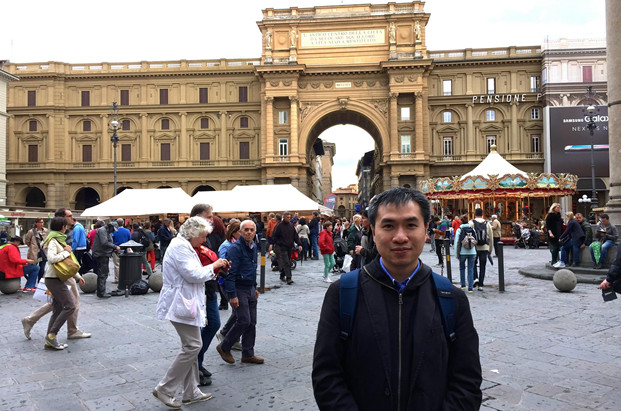
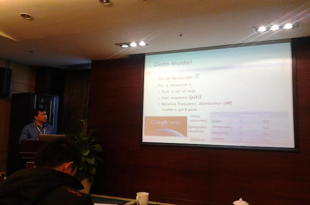
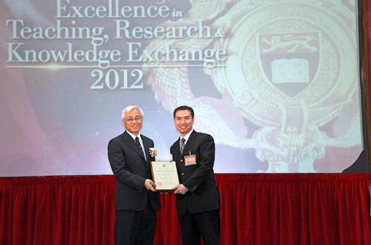

Reynold C.K. Cheng ( 鄭振剛 )

HKU Office, 2008

WWW Conference, Florence, 2015
WWW Conference, Florence, 2015

Hangzhou, 2015

Outstanding Young Researcher Award, HKU, 2013
Professor
BEng, MPhil (HKU); MSc, PhD (Purdue)
MIEEE, MACM
Computing and Data Analytics Programme Director
Department of Computer Science
University of Hong Kong
CB303, Chow Yei Ching Building
Pokfulam Road, Hong Kong
News
- Our HINCare project appears in newspapers and RTHK radio! [9/9/20]
- Congratulations to my PhD student Mr. Chenhao Ma for winning the Hong Kong and China Gas Company LImited Postgradaute Scholarship 2019-20. [22/6/20]
- Call for papers: IEEE International Conference on Data Engineering [ICDE 2021, 2/6/20]
- Call for papers: ICDM 2020 1st Workshop on Data Mining for Healthy Aging [DHA 2020, 2/6/20]
- Cover Story: Techno-Ageing, in HKU Bulletin May 2020 [5/20]
- I have been promoted to Professor on March 1, 2020. Thank you for your support! [HKUCS News, 1/3/20]
- Our elderly care recommendation system (HINCare) is now available.
- Collaboration with MTR Corporation, HKU Engineering, and HKU Science, is now on! [Press, 19/12/18]
- Online demo for our newest work on spatial pattern matching (ICDE 2018) available here with video demonstration [11/5/2018]
- We have presented a tutorial on Heterogeneous Information Networks in APWeb-WAIM 2017. The tutorial slides are available here. [ 20/7/02017 ]
- I am looking for top graduate students. Please click here for more details.
- Congratulations to my FYP students (Pui Lam, Ming Fai, Vinny, and Dongguang) for receiving Bronze Award in the China Pan-Pearl River Delta Region University IT Project Competition 2016. [22/7/16]
- Congratulations to my PhD student Mr. Yudian Zheng for winning the Hong Kong and China Gas Company Limited Postgraduate Scholarship 2015-16. [ 7/7/16 ]
Phone: (+852) 2219-4778
Fax: (+852) 2559-8447
Email: ckcheng (at) cs.hku.hk
URL: http://www.cs.hku.hk/~ckcheng/
Dr. Reynold Cheng is a Professor of the Department of Computer Science in the University of Hong Kong. He was an Assistant Professor in HKU in 2008-11. He received his BEng ( Computer Engineering ) in 1998, and MPhil ( Computer Science and Information Systems ) in 2000, from the Department of Computer Science in the University of Hong Kong. He then obtained his MSc and PhD from Department of Computer Science of Purdue University in 2003 and 2005 respectively. Dr. Cheng was an Assistant Professor in the Department of Computing of the Hong Kong Polytechnic University during 2005-08. He was a visiting scientist in the Institute of Parallel and Distributed Systems in the University of Stuttgart during the summer of 2006.
Prof. Cheng was granted an Outstanding Young Researcher Award 2011-12 by HKU. He was the recipient of the 2010 Research Output Prize in the Department of Computer Science of HKU. He also received the U21 Fellowship in 2011. He received the Performance Reward in years 2006 and 2007 awarded by the Hong Kong Polytechnic University. He is the Chair of the Department Research Postgraduate Committee, and was the Vice Chairperson of the ACM ( Hong Kong Chapter ) in 2013. He is a member of the IEEE, the ACM, the Special Interest Group on Management of Data ( ACM SIGMOD ), and the UPE (Upsilon Pi Epsilon Honor Society). He is an editorial board member of TKDE, DAPD and IS, and on the EIC selection committee for TKDE. He was a guest editor for TKDE, DAPD, and Geoinformatica. He is the lead PC co-chair of WISE 2019, a vice chair of ICDE 2020, an area chair for ICDE 2017, senior PC member of IEEE BigData, senior PC member for DASFAA 2015, PC co-chair of APWeb 2015, area chair for CIKM 2014, area chair for Encyclopedia of Database Systems, program co-chair of SSTD 2013, and a workshop co-chair of ICDE 2014. He received an Outstanding Service Award in the CIKM 2009 conference. He has served as PC members and reviewer for top conferences (e.g., SIGMOD, VLDB, ICDE, EDBT, KDD, ICDM, and CIKM) and journals (e.g., TODS, TKDE, VLDBJ, IS, and TMC). Prof. Cheng's main research area is large-scale data management. He has been working on the modeling, querying, cleaning, mining, and system development of uncertain databases for some time. Recently, he has also studied social networks, knowledge bases, and crowdsourcing technologies.
Current Project
Major Research Grants
- Using Knowledge Graphs for Long-Tail Keyword Query Recommendation in Video Search (PI, HKU-TCL Joint Research Centre for Artificial Intelligence, Ref: 200009430). Amount: HKD 1,000,000. (On-going)
- HINCare: A Heterogeneous Information Network for Elderly-Care Helper Recommendation (PI, Innovation and Technology Fund (ITF), Ref: MRP/029/18, 2019-2021). Amount: HKD 4,066,400. (On-going)
- Mass Transit Railway Corporation (MTRC) collaboration, core member and PhD supervisor. Amount: HKD 2,000,000. (On-going)
- Modelling of Artificial Neural Networks, Distributed System with High Reliability for Intelligent Data Management System, contract research, ASTRI, 2019. Amount: HKD 900,000 (On-going)
- Discovering and Querying Meta-Graphs in Large Heterogeneous Information Networks (PI, RGC GRF, Ref: 17229116, 2016-18), Co-I: B. Cautis and S. Maniu. Amount: HKD 675,647. (Completed)
- Efficient Query Algorithms for Uncertain Graph Databases (PI, RGC GRF, Ref: 17205115, 2015-17), Co-I: W. Fan and P. Senellart. Amount: HKD 462,528. (Completed)
- UV-Diagram: A Voronoi Diagram for Uncertain Spatial Databases (PI, RGC GRF, Ref: 711110, 2011-13), Co-I: K. Rothermel and M. L. Yiu. Amount: HKD 746,400. (Completed)
- Scalable Cleaning of Probabilistic Databases with Quality Guarantees (PI, RGC GRF, Ref: 711309E, 2010-12), Co-I: K. Rothermel and D. Olteanu. Amount: HKD 696,500. (Completed)
- Scalable Continuous Query Processing on Imprecise Location Data (PI, RGC GRF, Ref: 513508, 2009-11). Co-I: K. Rothermel. Amount: HKD 645,950. (Completed)
- Adaptive Filters for Continuous Queries over Constantly-Evolving Data Streams (PI, RGC CERG, Ref: 513307, 2008-10). Co-I: K. Rothermel. Amount: HKD 391,512. (Completed)
- Privacy Protection in Location-based Services with Location Cloaking (PI, RGC CERG. Ref: 513806, 2007-09). Co-I: E. Bertino and S. Prabhakar. Amount: HKD 356,000 (Completed).
[ 2020 ]
- Chenhao Ma, Reynold Cheng, Laks Lakshmanan, Tobias Grubenmann, Yixiang Fang, and Xiaodong Li. LINC: A Motif Counting Algorithm for Uncertain Graphs. In the Proceedings of the VLDB Endowment (PVLDB), Sep 2019. Also in the Very Large Databases Conf. (VLDB 2020), Tokyo, Aug 2020.
- Tsz Nam Chan, Reynold Cheng, and Man Lung Yiu. QUAD: Quadratic-Bound-based Kernel Density Visualization. In the ACM SIGMOD Conf. (SIGMOD 2020), Portland, OR, USA, Jun 2020.
- Jing Yan, Oliver Schulte, M. Zhang, Jiannan Wang, and Reynold Cheng. SCODED: Statistical Constraint Oriented Data Error Detection. In the ACM SIGMOD Conf. (SIGMOD 2020), Portland, OR, USA, Jun 2020.
- Chenhao Ma, Yixiang Fang, Reynold Cheng, Laks Lakshmanan, Wenji Zhang, and Xuemin Lin. Efficient Algorithms for Densest Subgraph Discovery on Large Directed Graphs. In the ACM SIGMOD Conf. (SIGMOD 2020), Portland, OR, USA, Jun 2020.
- Chenhao Ma, Nikos Mamoulis, Reynold Cheng, Guoliang Li, Xiang Li, and Yuqiu Qian. An End-to-End Deep RL Framework for Task Arrangement in Crowdsourcing Platforms. In the 36th IEEE Intl. Conf. on Data Engineering (IEEE ICDE 2020), Dallas, Texas, Apr 2020.[arxiv]
- Tobias Grubenmann, Reynold Cheng, and Laks Lakshmanan. TSA: A Truthful Mechanism for Social Advertising. In the Web Search and Data Mining Conference (WSDM 2020), Houston, Texas, USA, Feb 2020.
[ 2019 ]
- Yixiang Fang, Yangkai Yu, Reynold Cheng, and Laks Lakshmanan. Efficient Algorithms for Densest Subgraph Discovery. InProceedings of the VLDB Endowment (PVLDB), 12(11), pp. 1719-1732, July 2019. Also in the Very Large Databases Conf. (VLDB 2019), Los Angeles, Aug 2019.
- Jiafeng Hu, Reynold Cheng, Kevin C. C. Chang, Aravind Sankar, Yixiang Fang, and Brian Y. H. Lam. Discovering Motif Cliques in Large Heterogeneous Information Networks. In the 35th IEEE Intl. Conf. on Data Engineering (IEEE ICDE 2019), Macau SAR, China, Apr 2019.
- Siqiang Luo, Ben Kao, Xiaowei Wu, and Reynold Cheng. MPR – A partitioning-republication framework for multi-processing kNN Search on Road Networks. In the 35th IEEE Intl. Conf. on Data Engineering (IEEE ICDE 2019), Macau SAR, China, Apr 2019.
- Dan He, Sibo Wang, Xiaofang Zhou, and Reynold Cheng. An Efficient Framework for Correctness-Aware kNN Queries on Road Networks. In the 35th IEEE Intl. Conf. on Data Engineering (IEEE ICDE 2019), Macau SAR, China, Apr 2019.
[ 2018 ]
- Siqiang Luo, Ben Kao, Guoliang Li, Jiafeng Hu, Reynold Cheng, and Yudian Zheng. TOAIN: A Throughput Optimizing Adaptive Index for Answering Dynamic kNN Queries on Road Networks. In PVLDB, Rio De Janeiro, Brazil, Aug 27-31, 2018.
- Yixiang Fang, Reynold Cheng, Gao Cong, Nikos Mamoulis, and Yun Li. On Spatial Pattern Matching. In the 34th IEEE Intl. Conf. on Data Engineering (IEEE ICDE 2018), Paris, France, Apr 2018.
- Yixiang Fang, Reynold Cheng, Jikun Wang, Budiman, Gao Cong, and Nikos Mamoulis. SpaceKey: Exploring Patterns in Spatial Databases (Demo). In the 34th IEEE ICDE, Paris, France, Apr 16-20, 2018. [Online Demo][Video]
- Caihua Shan, Nikos Mamoulis, Guoliang Li, Reynold Cheng, Zhipeng Huang, and Yudian Zheng. T-Crowd: Effective Crowdsourcing for Tabula Data. In the 34th IEEE ICDE, Paris, France, Apr 16-20, 2018.
[ 2017 ]
- Yixiang Fang, Reynold Cheng, Xiaodong Li, Siqiang Luo, and Jiafeng Hu. Effective Community Search over Large Spatial Graphs. In PVLDB, Munich, Germany, Aug 28-Sep 1, 2017.
- Yudian Zheng, Guoliang Li, and Reynold Cheng. DOCS: Domain-Aware Crowdsourcing System. In PVLDB, Munich, Germany, Aug 28-Sep 1, 2017.
- Yudian Zheng, Guoliang Li, Yuanbing Li, Caihua Shan, and Reynold Cheng. Truth Inference in Crowdsourcing: Is the Problem Solved? [Experiments and Analyses]. In PVLDB, Munich, Germany, Aug 28-Sep 1, 2017.
- Yixiang Fang, Reynold Cheng, Siqiang Luo, Jiafeng Hu, and Kai Huang. C-Explorer: Browsing Communities in Large Graphs (demo). In the 43rd Intl. Conf. on Very Large Data Bases (VLDB), Munich, Germany, August 2017.
- Jiafeng Hu, Reynold Cheng, Zhipeng Huang, Yixiang Fang, and Siqiang Luo. On Embedding Uncertain Graphs. In the 26th ACM Conf. on Information and Knowledgmeent Management (CIKM), Singapore, Nov 2017.
- Jiafeng Hu, Xiaowei Wu, Reynold Cheng, Siqiang Luo, and Yixiang Fang. On Minimal Steiner Maximum-Connected Subgraphs. In the Transactions on Knowledge and Data Engineering (IEEE TKDE), July 2017.
- Chenghui Ren, Eric Lo, Ben Kao, Xinjie Zhu, Reynold Cheng, and David Cheung. Efficient Processing of Shortest Path Queries in Evolving Graph Sequences. In Information Systems (IS), 70:18-31, 2017.
- Silviu Maniu, Reynold Cheng, and Pierre Senellart. An Indexing Framework for Queries on Probabilistic Graphs. In ACM Transactions on Database Systems (TODS), 42(2), Jun 2017.
- Zhian He, Petrie Wong, Ben Kao, Eric Lo, Reynold Cheng, and Ziqiang Feng. Efficient Pattern-Based Aggregation on Sequence Data. In the Transactions on Knowledge and Data Engineering (IEEE TKDE), ISSN: 1041-4347, pp. 286-299, 2017.
[ 2016 ]
- Jiafeng Hu, Xiaowei Wu, Reynold Cheng, Siqiang Luo, and Yixiang Fang. Querying Minimal Steiner Maximum-Connected Subgraphs in Large Graphs. In CIKM 2016, Indianapolis, October 2016.
- Zhipeng Huang, Bogdan Cautis, Reynold Cheng, and Yudian Zheng. KB-Enabled Query Recommendation for Long-Tail Queries. In CIKM 2016, Indianapolis, October 2016.
- Yixiang Fang, Reynold Cheng, Siqiang Luo, and Jiafeng Hu. Effective Community Search for Large Attributed Graphs. In VLDB 2016, 9(12), pp. 1233 - 1244, New Delhi, August 2016.
- Zhenguo Li, Yixiang Fang, Qin Liu, Jiefeng Cheng, Reynold Cheng, and John C. S. Lui. Walking in the Cloud: Parallel SimRank at Scale. In VLDB 2016, 9(1), pp. 24 - 35, New Delhi, August 2016.
- Zhipeng Huang, Yudian Zheng, Reynold Cheng, Yizhou Sun, Nikos Mamoulis, and Xiang Li. Meta Structure: Computing Relevance in Large Heterogeneous Information Networks. In the 22nd ACM SIGKDD Intl. Conf. on Knowledge Discovery and Data Mining (KDD 2016), San Francisco, US, August 2016.
- Chengcheng Dai, Sarana Nutanong, Chi-Yin Chow, and Reynold Cheng. Entropy-based Scheduling Policy for Cross Aggregate Ranking Workloads. In the Transactions on Services Computing (TSC), ISSN: 1939-1374, June 2016.
- Huiqi Hu, Yudian Zheng, Zhifeng Bao, Guoliang Li, Jianhua Feng, and Reynold Cheng. Crowdsourced POI Labelling: Location-Aware Result Inference and Task Assignment. In Intl. Conf. on Data Engineering (IEEE ICDE 2016), Helsinki, Finland, May 2016.
- Yixiang Fang, Reyond Cheng, Wenbin Tang, Silviu Maniu, and Xuan Yang. Scalable Algorithms for Nearest-Neighbor Joins on Big Trajectory Data. In the Transactions on Knowledge and Data Engineering (TKDE), pp. 785-800, ISSN: 1041-4347, 28(3), March 2016.
[ 2015 ]
- Siyu Lei, Silviu Maniu, Luyi Mo, Reynold Cheng, and Pierre Senellart. Online Influence Maximization. In the 21th ACM SIGKDD Intl. Conf. on Knowledge Discovery and Data Mining (KDD 2015), Sydney, Australia, August 2015.
- Yudian Zheng, Jiannan Wang, Guoling Li, Reynold Cheng, and J. Feng. QASCA: A Quality-Aware Task Assignment System for Crowdsourcing Applications. In ACM SIGMOD Intl. Conf. on Management of Data (SIGMOD 2015), Melbourne, Victoria, Australia, May 2015. [ Talk ] [ Poster ] [ More ]
- Yudian Zheng, Reynold Cheng, Silviu Maniu, Luyi Mo. On Optimality of Jury Selection in Crowdsourcing. In ACM EDBT Intl. Conf. on Extending Database Technology (EDBT 2015), Brussels, Belgium, March 2015. [ Talk ] [ More ]
- Changping Meng, Reynold Cheng, Silviu Maniu, Pierre Senellart, and Wangda Zhang. Discovering Meta-Paths in Large Heterogeneous Information Networks. In the 24th Intl. World Wide Web Conf. (WWW 2015), Florence, Italy, May 2015. [ Talk ]
- Jiafeng Hu, Reynold Cheng, Dingming Wu, and Beihong Jin. Efficient Top-k Subscription Matching for Location-Aware Publish/Subscribe. In the 14th Intl. Symposium on Spatial and Temporal Databases (SSTD 2015), Hong Kong, August 2015.
- T. Emrich, K. A. Schmid, A. Zuefle, M. Renz, and Reynold Cheng. Uncertain Voronoi Cell Computation based on Space Decomposition. In the 14th Intl. Symposium on Spatial and Temporal Databases (SSTD 2015), Hong Kong, August 2015.
- Chun Jiang Zhu, Kam-yiu Lam, Reynold Cheng, Chung Keung Poon. On using broadcast index for efficient execution of shortest path continuous queries. Inf. Syst. 49: 142-162 (2015).
[ Selected Publications Before 2015 ]
- Yu Tang, Leong Hou U, Yilun Cai, Nikos Mamoulis, Reynold Cheng. Earth Mover's Distance based Similarity Search at Scale. In PVLDB 7(4), pp. 313-324. In VLDB 2014.
- Wangda Zhang, Reynold Cheng, Ben Kao. Evaluating multi-way joins over discounted hitting time. ICDE 2014: 724-735.
- Xike Xie, Man Lung Yiu, Reynold Cheng, Hua Lu. Scalable Evaluation of Trajectory Queries over Imprecise Location Data. IEEE Trans. Knowl. Data Eng. 26(8): 2029-2044 (2014).
- Xike Xie, Reynold Cheng, Man-Lung Yiu, Liwen Sun, and Jinchuan Chen. UV-Diagram: A Voronoi Diagram for Uncertain Spatial Databases. In the Very Large Databases Journal (VLDBJ), 22(3), pp. 319-344, June 2013.
- Luyi Mo, Reynold Cheng, Xiang Li, David Cheung, and Xuan Yang. Cleaning Uncertain Data for Top-k Queries. In Intl. Conf. on Data Engineering (IEEE ICDE 2013), Brisbane, Apr 2013. [ Talk ]
- Xuan S. Yang, Reynold Cheng, Luyi Mo, Ben Kao, David W. Cheung. On incentive-based tagging. ICDE 2013: 685-696. [ Talk ]
- Peiwu Zhang, Reynold Cheng, Nikos Mamoulis, Matthias Renz, Andreas Züfle, Yu Tang, Tobias Emrich. Voronoi-based nearest neighbor search for multi-dimensional uncertain databases. ICDE 2013: 158-169. [ Talk ]
- Luyi Mo, Reynold Cheng, Ben Kao, Xuan S. Yang, Chenghui Ren, Siyu Lei, David W. Cheung, Eric Lo. Optimizing plurality for human intelligence tasks. CIKM 2013: 1929-1938. [ Talk ]
- Liwen Sun, Reynold Cheng, Xiang Li, David Cheung, and Jiawen Han. On Link-based Similarity Join. In VLDB 2011. [ Talk ]
- Reynold Cheng, Eric Lo, Xuan Yang, Ming-Hay Luk, Xiang Li, and Xike Xie. Explore or Exploit? Effective Strategies for Disambiguating Large Databases. In VLDB 2010. [ Talk ]
- Liwen Sun, Reynold Cheng, David Cheung, and Jiefeng Cheng. Mining Uncertain Data with Probabilistic Guarantees. In the 16th ACM SIGKDD Conf. on Knowledge Discovery and Data Mining (ACM SIGKDD), Washington D.C., USA, Jul 2010.
- Jinchuan Chen, Reynold Cheng, Mohammed Mokbel and Chi-Yin Chow. Scalable Processing of Snapshot and Continuous Nearest-Neighbor Queries over One-Dimensional Uncertain Data. In VLDBJ, Special Issue on Uncertain and Probabilistic Databases, 18(5), 2009. (Awarded Research Output Prize in Dept. of Computer Science, Faculty of Engineering, HKU, 2010).
- Reynold Cheng, Jinchuan Chen, Mohamed Mokbel, and Chi-Yin Chow. Probabilistic Verifiers: Evaluating Constrained Probabilistic Nearest-Neighbor Queries over Uncertain Data. In the IEEE Intl. Conf. on Data Engineering (IEEE ICDE 2008), Cancun, Mexico, Apr, 2008. [ Talk ]
- Reynold Cheng, Jinchuan Chen and Xike Xie. Cleaning Uncertain Data with Quality Guarantees. In VLDB 2008. [ Talk ]
- Yufei Tao, Xiaokui Xiao and Reynold Cheng. Range Search on Multidimensional Uncertain Data. In ACM Transactions on Database Systems (TODS), 32(3), 2007.
- Reynold Cheng, Yuni Xia, Sunil Prabhakar, Rahul Shah and Jeffrey Vitter. Efficient Indexing Methods for Probabilistic Threshold Queries over Uncertain Data. VLDB, 2004. [ Talk ]
- Reynold Cheng, Dmitri Kalashnikov, and Sunil Prabhakar. Querying Imprecise Data in Moving Object Environments. In IEEE Transactions on Knowledge and Data Engineering (IEEE TKDE), Vol. 16, No. 9, pp. 1112-1127, Sep 2004.
- Reynold Cheng, Dmitri Kalashnikov and Sunil Prabhakar. Evaluating Probabilistic Queries over Imprecise Data. In ACM SIGMOD, 2003. [ Talk ]
Current Postdoctural Researchers and Research Students
- Tsz Nam Chan (Edison) (posdoc since 2018)
- Caihua Shan (postdoc since 2020)
- Xiaodong Li (PhD, 2016 – current)
- Chenhao Ma (PhD, 2017- current)
- Xiaolin Han (PhD, 2018 - current)
- Wenya Sun (PhD, 2019 - current)
Graduated Students
- Jiafeng Hu (PhD, graduated, now in Google China)
- Yixiang Fang (PhD, graduated, now postdoctoral researcher in UNSW)
- Yudian Zheng (PhD, graduated, now in Twitter)
- Nathan Yan (MPhil, graduated, now PhD in Cornell University)
- Haiqi Sun (MPhil, graduated)
- Siqiang Luo (PhD, graduated, now postdoctoral researcher in Harvard University)
- Zhipeng Huang (PhD, graduated)
- Yong Xu ( MPhil, graduated in 2017, now in Microsoft Research Asia)
- Changpeng Meng ( MPhil, graduated in 2014, now PhD in Purdue University )
- Yu Tang ( MPhil, graduated in 2014; now PhD in Oxford University )
- Wangda Zhang ( MPhil, graduated in 2013; now PhD in Columbia University )
- Xike Xie ( PhD, graduated in 2012; now Professor in University of Science and Technology of China)
- Liwen Sun ( MPhil, graduated in 2010; now PhD in UC Berkeley )
- Yinuo Zhang ( MPhil, graduated in 2010; now PhD in USC )
- Jinchuan Chen ( PhD, HKPU, graduated in 2009; now Associate Professor in Renmin University, China)
- Luyi Mo ( PhD, graduated in 2015)
- Siyu Lei ( MPhil, graduated in 2015 )
- Xuan Yang ( PhD, graduated in 2013 )
- Peiwu Zhang ( MPhil, graduated in 2012 )
- Yifan Jin ( MPhil, graduated in 2012 )
- Xiang Li ( MPhil, graduated in 2012; now in Merrill Lynch, Hong Kong )
- Jim Gong ( PhD, graduated in 2011 )
Previous Postdoctoral Researchers
- Dr. Tobias Grubenmannan (2018 -- 20; now Senior Researcher at University of Bonn)
- Dr. Silviu Maniu ( 2012 – 15; now Associate Professor in Universite Paris-Sud)
- Dr. Jiefeng Cheng ( 2009 - 11; now Senior Research Engineer in Tencent)
[ In HKU ]
- The Age of Big Data ( UG, Common Core, Fall 2013, Spring 2015, Spring 2016 )
- Introduction to Database Management Systems ( UG, Spring 2009-10, Fall 2010, Fall 2013 )
- Advanced Topics in Data Engineering ( PG, Fall 2012, Spring 2016)
- Introduction to Database Management Systems (HKU, Spring 2009-10, Fall 2010)
- Topics in Computer Science: Uncertainty Management ( PG, Fall 2011 )
- Data Analysis and Machine Learning ( PG, Spring 2009 )
- Topics in Computer Systems: Workflow Management ( PG, Fall 2008, Summer 2010, Spring 2011 )
[ In Hong Kong Polytechnic University ]
- Wireless Computing Systems and Applications ( PG, Fall 2005-07 )
- Workflow Management and Collaborative Systems ( PG, Spring 2006-07 )
- Principles of Programming ( UG, Fall 2006 )
Teaching Related Grants
- PI – The Development of the Common Core Course “The Age of Big Data” (Teaching Development Grant, HKU, 2015. Ref: 101000560).
- Co-I ( PI: M. Wang ) – Support Self-Directed Learning in Interdisciplinary Studies by Developing a Knowledge Visualization and Navigation System ( Teaching Development Grant, HKU, 2009-11 ). Amount: HKD 268,240.
- William Mong Visiting Research Fellowship 2015-16, with Prof. H. V. Jagadish from University of Michigan
- Recipient of the Outstanding Young Researcher Award 2011-12, HKU
- Recipient of U21 Fellowship 2011
- 2010 Research Output Prize in HKU Computer Science
- William Mong Visiting Research Fellowship 2011-12, with Prof. Divyakant Agrawal from University of California, Santa Barbara
- Performance Rewards, Hong Kong Polytechnic University (2007)
- Performance Rewards, Hong Kong Polytechnic University (2006)
My Students’ Awards
- Yudian Zheng, my PhD student, won the SIGMOD 2015 and KDD 2016 Travel Grant.
- Zhipeng Huang, my PhD student, won the KDD 2016 Student Travel Grant.
- Jason Meng, my MPhil student, won the WWW 2015 Student Travel Grant.
- Luyi Mo, my PhD student, won the Hong Kong and China Gas Company Limited Postgraduate Scholarship 2012-13.
- Luyi Mo, my PhD student, won the Hong Kong PhD Fellowship awarded by the Hong Kong RGC, 2011.
- Lau Kai Wai Elvis, Lau Si Kit Alex, Li Tang Tommy, Chau Kei Man, my FYP students, won the Champion prize for the HKU Final-Year Project Competition, on An Intelligent Mobile Transport System, 2010-11.
- Bryan Hui, Li Man Ho, Michael Lau, and Hao Chan, my FYP students, won the First runner-up prize for the HKU Final-Year Project Competition, on Energy-aware location-based services, 2009-10
- The HKU programming team, coached by me, obtained an honorable mention in the World Finals of the ACM International Collegiate Programming Contest, in Stockholm in April 2009.
- The HKU team, coached by me, won the 2nd Runner-Up award in the IBM Inter-University Programming Contest 2009.
- Three HKU programming teams, coached by me, won the Gold, Silver, and Bronze Awards in the ACM Collegiate Programming Regional Contest (Indonesia), 2008.
- Chan Hong Ming, my FYP student, won the Merit Awards of the Charles Baggage Final Year Project Awards, HKPU, 2007/08.
- Kitty Yuen, my FYP student, won the champion of the Amway Pan-Pearl IT Project Competition, China, for the final year project in 2007.
- Kitty Yuen and Terry Wong, my FYP students, won the Merit Awards of the Charles Baggage Final Year Project Awards, HKPU, 2006/07.
- PC Co-Chair of International Conference on Data Engineering (ICDE), 2021
- Area Chair of International Conference on Data Engineering (ICDE), 2017
- Senior PC member of IEEE Inteternational Conference on Big Data (IEEE BigData), 2017
- Editor-in-Chief (EIC) Search Committee of the IEEE Transactions on Knowledge and Data Engineering, 2017
- Editorial Board Member of the IEEE Transactions on Knowledge and Data Engineering
- Editorial Board Member of Distributed and Parallel Databases Journal
- Editorial Advisory Board Member of Information Systems
- Guest Editor of Geoinformatica, 2013
- Guest Editor of Distributed and Parallel Databases, 2013
- Area Editor of the Encyclopedia of Database Systems, 2nd edition (co-edited by T. Oszu and L. Liu)
- Guest Editor of IEEE TKDE, 2010
- Vice Chairperson of the ACM Hong Kong Chapter 2012; Workshop Co-chair of ICDE 2014; Program Co-chair of SSTD 2013; Organizer of VLDB 2013, PAKDD 2011 PhD Symposium, ICDE 2010, MDM 2010, ICDE 2009, ICDM 2007 workshops; Registration Chair of CIKM 2009
- PC member in more than 60 international conferences/workshops, including ACM SIGMOD, VLDB, IEEE ICDE, KDD, ICDM, CIKM, ACM SIGSPATIAL GIS, and HCOMP
- Reviewer of top database and data mining journals, including TODS, VLDBJ, TKDE, IS, IEEE TC, IEEE TWeb, and IEEE ToN
--- Last modified in June 2020 ---